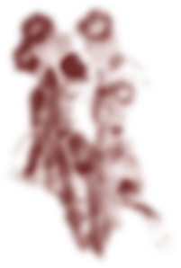
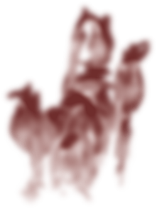
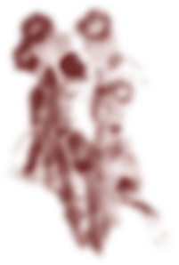
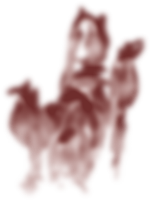

情歌大多时候总是哀婉，柔和如水。偶尔唱《单恋一枝花》总觉得自己很酷，别再为不甘的爱情流连心软，别死守天长地久海枯石烂傻傻的情话。黑白色影像，弥散白雾的烟头，碎裂的镜子，冷漠与愤怒中游走的女人。以新时代的姿态对旧爱大声说拜拜。
事实上我未曾经历过这样的爱情；事实上我未曾经历过张宇苦情歌里描绘的大多数爱情。于我而言这是一种美学，和读白先勇的小说、看杨德昌的电影是类似的意味：那样旧式的生活里缓缓展开一些新的动人故事。不像许多在爱情里身经百战的人，听张宇的时候我听到的并不是我的故事，却是讲故事的那个人或悲苦、或洒脱、或幽默、或温柔地将我带进故事里，一个旋律里的说书人。
而当这你已习惯了一身长布衫、眉眼柔和的说书人换上黑色皮衣，抛开千丝万缕的愁绪而显出所有的锋芒，便有了另一种难以抗拒的魅力。我与小伙伴们在中学放课后的走廊唱《单恋一枝花》，彼时仍不大懂什么叫做“貌合神离的心伤”，只觉得自己也变成了黑白色的，好像已经成为了一个洒脱的大人。

事实上我未曾经历过这样的爱情；事实上我未曾经历过张宇苦情歌里描绘的大多数爱情。于我而言这是一种美学，和读白先勇的小说、看杨德昌的电影是类似的意味：那样旧式的生活里缓缓展开一些新的动人故事。不像许多在爱情里身经百战的人，听张宇的时候我听到的并不是我的故事，却是讲故事的那个人或悲苦、或洒脱、或幽默、或温柔地将我带进故事里，一个旋律里的说书人。
而当这你已习惯了一身长布衫、眉眼柔和的说书人换上黑色皮衣，抛开千丝万缕的愁绪而显出所有的锋芒，便有了另一种难以抗拒的魅力。我与小伙伴们在中学放课后的走廊唱《单恋一枝花》，彼时仍不大懂什么叫做“貌合神离的心伤”，只觉得自己也变成了黑白色的，好像已经成为了一个洒脱的大人。
 


